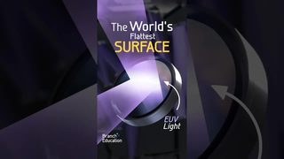

点封面在页面里播放（Vimeo / YouTube / X 需要代理；Vimeo 若没自动开始，再点一下播放键）。觉得好就点「喜欢」，我会据此多找同类，但每天仍保持类型分散。
目录 01 Everpure x Bloomberg TV 系列02 R.EVISITED（Hublot 概念片）03 Dyson Clean+Wash Hygiene04 Paperlab：会折、会卷、会烧的纸05 Aave 通知开关弹窗－ 没进前五的那 1 条拆 偏好变化和信源建议
01 MG 数据可视化
Everpure x Bloomberg TV 系列
Illo · 10-19，90 秒 【看过视频】
好在哪 90 秒几乎不切，等轴测塔压扁成柱状图再立回 3D，一个形状一路变到底，缓动没有回弹。比同类强在：同一天看的 Foundry Labs 品牌片靠 0.5 到 1 秒乱切和发光符号撑场面，这条只用形状接力和一种虹彩强调色，暂停哪一帧都干净可借 讲 AI 概念时先给每个概念定一个形状，全片不换，用形状接力代替切镜。Remotion 做法见周六日报的细拆
展开全文
02 3D质感 剪辑节奏
R.EVISITED（Hublot 概念片）
Studio River · 9-29 上传，10-15 报道，68 秒 【看过视频】
Vimeo 好在哪 「慢、快、慢」三段：开头 4 到 6 秒一镜的远景，中段装表约 1 秒一切、切在动作上，结尾留 10 秒以上的英雄镜头。比同类强在：手表片常见的是满屏调色和光效，这条纯灰阶，只靠硬光打在冰、玻璃、金属上出质感，景深只用来引导视线可借 实测新设备时照这个节奏排：慢镜立气氛，拆装快切，成品留长镜。黑白加一盏硬光就能试
展开全文
03 剪辑节奏 转场
Dyson Clean+Wash Hygiene
Optical Arts · 10-23，40 秒 【看过视频】
Vimeo 好在哪 先 5 秒大全景，再踩进行曲鼓点 1 到 2 秒一切，每刀切在洗地机倒下的半途，下一镜接着倒。比同类强在：快切本身不稀奇，难得的是动作方向贯穿每一刀，所以快而不乱。同一天剔掉的 Cleo Abram 短片也是快切加甩镜，但没有这条动作线，看着就吵可借 讲「连锁反应 / 流程」时，先全景交代空间，再踩拍快切，让同一个方向的动作把镜头串起来
展开全文
04 代码动画 3D质感
Paperlab：会折、会卷、会烧的纸
Noor Mtir · 10-18 【看过视频】
Codrops ↗ Codrops 文章里的演示录屏拼接，共 47 秒，无声
好在哪 纸是真 3D 网格，边烧边卷，火光会照亮纸面，灰烬也在 3D 空间里飞。比同类强在：网页上的「翻页 / 折纸」大多是两片平面假折，这条有材质和光的互动，而且开源，是这周唯一能直接拿来改的可借 竖屏开场用 Three.js 点燃一页论文、卷起后露出标题，Remotion 用 @remotion/three 接入。最值得抄的是火光打到纸上那一下
展开全文
05 UI动效 3D质感
Aave 通知开关弹窗
Aave App（60fps 收录，具体设计师没署名） · 10-21，13 秒 【看过视频】
原帖无声
好在哪 13 秒循环，深灰单色里只有一只柔紫色的哑光 3D 铃铛轻轻摆，有自阴影和柔和投影。比同类强在：同类 3D 图标常靠辉光和高光撑效果，这条一点发光都没有，立体感全来自材质和阴影，正好落在「克制、有立体质感」上可借 讲某个功能怎么开时，做「哑光 3D 小图标 + 一行字」的循环卡片，Three.js 用高粗糙度材质加一盏柔光
展开全文
没进前五的那 1 条 
Branch Education · 周六保留了，这次没进前五：一路推近换尺度的手法好，但画面偏模板化，紫色激光的光晕快碰到「廉价发光」那条线
本周小结
偏好变化和信源建议 本周偏好变化 这周还没收到「喜欢 / 不要」的回复，偏好.md 没有改动 从看片结果看，被剔掉的 4 条都是快切、甩镜、发光、虚化这类，跟「已知不要」一致，标准暂时不用调 实拍线全军覆没，下周日报会专门多找布光和英雄镜头做得克制的实拍作品 信源调整建议（等你确认再改信源.md） Stash 这周贡献最大：保留的 6 条里有 3 条（Illo、Studio River、Optical Arts）是从它的报道找到的，建议保留为主力 MKBHD、Cleo Abram 这周的片子看完都被剔掉，只跑了一天，样本太少，先不动，下周再看 实拍线缺货，建议试着加一个实拍向的信源，具体人选下周日报里先试跑再报给你 回复方式 想要的回「喜欢 1、3」，不要的回「不要 2：原因」，我会记进偏好.md
信源：Vimeo Staff Picks、Stash、Motionographer、Codrops、YouTube（Branch Education、MKBHD、Cleo Abram、Kurzgesagt、Vox、Apple 等频道 RSS）、X（@60fpsdesign、关键词搜索）